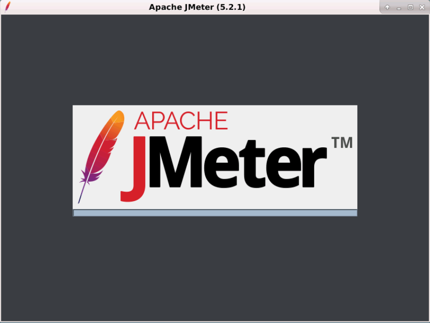
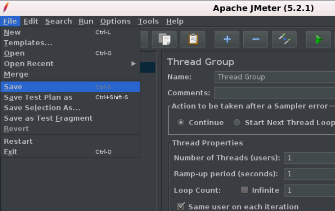
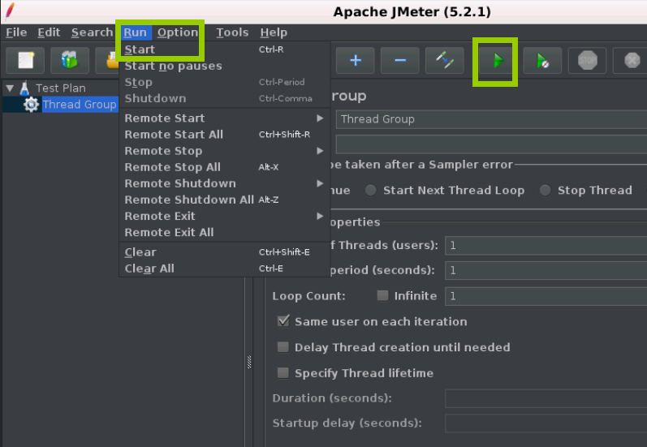

JMeter 构建测试计划
可以将测试计划可视化为用于运行测试的JMeter脚本。测试计划由测试元素组成，例如线程组，逻辑控制器，样本生成控制器，监听器，定时器，断言和配置元素。 每个测试计划中至少应有一个线程组。 我们可以根据要求添加或删除元素。 让我们按照以下简单步骤开始构建测试计划:
第1步:启动JMeter窗口
- 进到JMeter bin文件夹，双击jmeter.bat 文件以启动JMeter界面。
- 下图显示了默认的JMeter界面，但未添加任何其他元素:

- 默认的JMeter界面包含一个测试计划节点，其中保留了真实的测试计划。
- “测试计划(Test plan)”节点包含测试计划的名称和用户定义的变量。
- 当您在测试计划的多个部分中有重复值时，可使用用户定义变量，它提供了灵活性。
第2步:添加/删除测试计划元素
- 为JMeter创建测试计划后，下一步是向JMeter测试计划添加和删除元素。
- 选择测试计划节点，然后右键单击所选项目。
- 鼠标悬停在“Add”选项上，然后将显示元素列表。
- 鼠标悬停在所需的列表元素上，然后单击选择所需的选项。
- 下图显示了如何在测试计划中添加线程组元素:

- 要删除元素，请选择所需的元素。
- 右键单击元素，然后选择“Remove”选项。
- 下图显示了如何删除测试计划中的线程组元素:
第3步:加载并保存测试计划元素。
- 要将元素加载到JMeter测试计划树，请选择并右键单击要添加已加载元素的任何树元素。
- 选择“Merge”选项。
- 选择保存元素的
.jmx文件。 -
元素将合并到JMeter测试计划树中。
-
要保存树元素，请右键单击元素。
- 选择“Save Selection As”选项。
- 将文件保存在所需位置。
第4步:配置树元素。
可以使用JMeter右侧框架上的控件配置测试计划中的元素。 这些控件允许您配置所选元素的行为。 例如，可以通过以下方式配置线程组:
- 元素的名称。
- 线程数(正在测试的用户数)。
- 加速时间(希望允许线程组从
0到3个用户的时间)。 - 循环计数(应该循环测试的次数)。
第5步:保存JMeter测试计划。
到目前为止，我们已经完成了创建测试计划，添加元素和配置树。 现在，您可以通过从文件菜单中选择“Save” 或“Save Test Plan As”来保存整个测试计划。

第6步:运行JMeter测试计划。
- 可以通过单击菜单项中的“Start(Control + r)”来运行测试计划，也可以单击绿色播放按钮。 下图显示了如何运行测试计划。

- 当测试计划开始运行时，JMeter界面在菜单栏正下方的部分的右端显示一个绿色圆圈。 绿色圆圈左侧的数字表示：
- 活动线程数/总线程数
第7步：停止JMeter测试计划。
可以使用Stop(Control +’.’)停止测试计划 - 如果可能，它会立即停止线程。 您还可以使用Shutdown(Control +’，’) - 它请求线程在任何正在进行的任务结束时停止。
第8步：检查JMeter测试计划执行日志。
JMeter将测试运行详细信息，警告和错误存储到jmeter.log文件中。